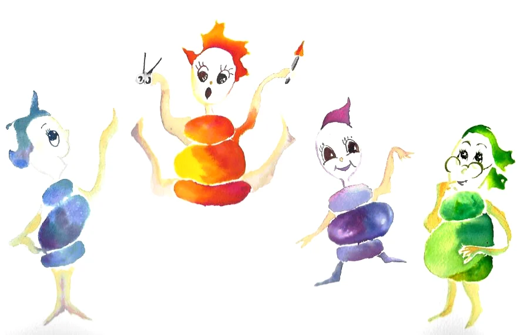

Chaque semaine
2 heures d’atelier
Un atelier d’arts plastiques, animé par Martine Durand.
L’atelier d’arts plastiques de Martine Durand
2 heures par semaine, et des stages pendant les vacances scolaires.
Chaque semaine
Un atelier d’arts plastiques, animé par Martine Durand.
Pendant les vacances scolaires
L’atelier propose aussi des stages pendant les vacances scolaires.
Pour s’inscrire
Pour tout renseignement, il suffit d’écrire ou d’appeler Martine.
